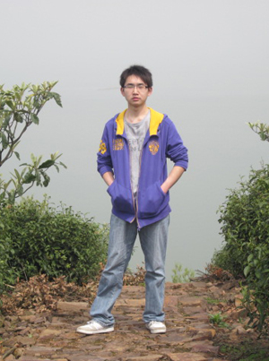

个人资料
- 姓 名：张杨杨
- 性 别：男
- 年 龄：24
- 居住地址：无锡
- 毕业院校：淮南职业技术学院
- 专 业：计算机信息管理
- 联系方式：13656178592（无锡）
- 邮 箱：BYH5566@163.com
- 个人网站：white-poplar.github.io
求职意向
无锡
Web 开发
PHP、Python、ASP.Net、ASP
职业技能
- 熟练掌握HTML、XHTML、CSS Web技术；
- 熟悉JavaScript、XML、AJAX Web技术；
- 熟悉jQuery、Bootstrap、KISSY开发框架；
- 熟练Sublime Text、NotePad++、SVN、Git等进行团队协作开发；
- 熟练Firebug、DebugBar、HttpWatch、IETester等调试工具；
- 熟悉SQL Server、Mysql、C#、ASP.Net、ASP；
- 了解PHP、Python、HTTP协议；
- 关注并提高：性能优化/JavaScript/HTML5/CSS3/Node.js/PHP/Python；
教育经历
2009年9月---2012年7月
淮南职业技术学院
计算机信息管理
工作经历
-
2012年2月--- 2013 年 3 月
无锡君通软件有限公司
ASP程序员
主要负责公司ASP网站项目的开发与维护；配合与美工负责对网站项目进行修改完善。项目有 超群装饰(www.wxcqzs.cn)、名人轩画廊(www.mingrenxuan.cn)、北仓门文化艺术(www.bcm-art.com.cn)、香榭丽舍(www.elyseescake.com) 等 。
-
2013年3月--- 2014 年 1 月
无锡医库软件科技有限公司
.Net程序员
使用三层架构开发公司内使用的企业系统。项目有 CRM（客户关系管理）系统、小型进销存管理系统、实验室科研管理系统。
自我简介
喜欢 编程、阅读、看电影、听相声、热爱前端开发。自学能力强，喜欢钻研新技术，能够清晰理解整体架构及业务逻辑，敢于面对和克服困难。